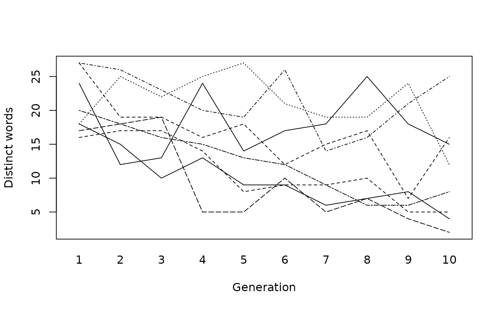

Eight transmission chains of ten learners pass on an artificial language that names 27 moving coloured shapes. Each learner is trained on 14 of the 27 word-picture pairs produced by the previous learner and then names all 27 pictures; the first learner is trained on a random language. In four chains the training pairs are passed on as they are. In the other four, words that name more than one picture are filtered out before training. Transmission error falls and structure rises across generations in both conditions. Without the filter, the number of distinct words collapses. For growth across generations, mixed models with few clusters and counts.
Format
A tibble with 80 rows and 6 columns:
- condition
"no filter"or"filter".- chain
Chain ID:
A1toA4without andB1toB4with the filter.- generation
Learner's position in the chain, 1 to 10.
- error
Transmission error: normalised edit distance between this learner's words and the previous learner's, averaged over the 27 pictures.
- words
Number of distinct words the learner produced.
- structure
Structure: z-score of the correlation between the distances among words and the distances among meanings, against random pairings of words and meanings.
Details
True model: on the logit scale, transmission error starts at 0.80 (no filter) or 0.72 (filter) and falls by 0.55 or 0.20 per generation, with chain (SD 0.3) and residual (SD 0.3) variation. Structure rises by 0.6 (no filter) or 0.75 (filter) per generation, scaled by a chain effect (SD 0.15), with noise SD 1.2. The number of distinct words is 1 plus a Poisson count, capped at 27, whose mean starts near 20 and falls by 18% per generation without the filter and by 4% with it. The design follows Kirby, Cornish and Smith (2008), in whose two experiments transmission error fell by 0.75 and 0.43 and structure rose by 5.6 and 6.8 over ten generations. The chains are simulated.
References
Kirby, S., Cornish, H. & Smith, K. (2008). Cumulative cultural evolution in the laboratory: An experimental approach to the origins of structure in human language. Proceedings of the National Academy of Sciences, 105(31), 10681-10686. doi:10.1073/pnas.0707835105
Examples
aggregate(cbind(error, words, structure) ~ condition + generation,
data = subset(iterated_learning, generation %in% c(1, 10)), FUN = mean)
#> condition generation error words structure
#> 1 no filter 1 0.83050 17.75 0.525
#> 2 filter 1 0.65300 24.00 0.245
#> 3 no filter 10 0.03425 4.75 6.565
#> 4 filter 10 0.28850 17.00 7.295
interaction.plot(iterated_learning$generation, iterated_learning$chain,
iterated_learning$words, legend = FALSE, xlab = "Generation",
ylab = "Distinct words")

m <- glm(words ~ generation * condition, data = iterated_learning, family = poisson)
round(exp(coef(m)), 3)
#> (Intercept) generation
#> 21.785 0.863
#> conditionfilter generation:conditionfilter
#> 1.050 1.123
if (requireNamespace("lme4", quietly = TRUE)) {
m <- lme4::lmer(structure ~ generation * condition + (1 | chain), data = iterated_learning)
round(lme4::fixef(m), 2)
}
#> (Intercept) generation
#> -0.83 0.68
#> conditionfilter generation:conditionfilter
#> 0.04 0.02